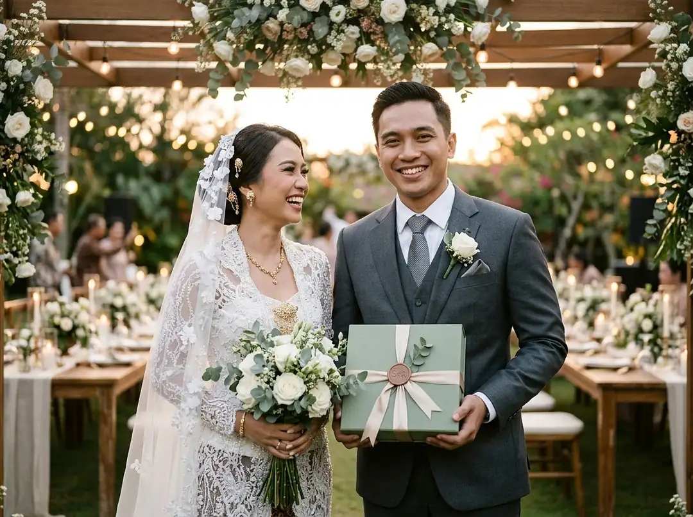

Souvenir pernikahan handmade dari pengrajin lokal adalah cendera mata yang melibatkan pengerjaan manual oleh perajin di suatu daerah. Contohnya dapat berupa tas anyaman pandan, besek bambu, pouch kain batik, atau aksesori kayu berukir. Nilai tariknya terletak pada detail pengerjaan yang autentik dan karakter unik bahan baku lokal. Saat memilih, pastikan asal produk, proses pembuatan, konsistensi kualitas, serta kapasitas pemesanan dapat dijelaskan secara transparan (pelajari juga panduan memilih souvenir pernikahan). Anda dapat melihat ragam kriya tradisional pada Paket Souvenir Tradisional kami.
Karakteristik Souvenir Handmade dan Kesesuaiannya
Produk buatan tangan sering kali memiliki detail yang tidak sepenuhnya seragam seperti cetakan mesin pabrik. Perbedaan kecil pada kerapatan pola anyaman, saturasi pewarnaan alami serat kain, atau hasil akhir amplasan kayu merupakan ciri khas kriya manual, selama seluruhnya masih berada dalam standar toleransi mutu yang disepakati.
Souvenir jenis ini sangat serasi untuk perayaan bernuansa Nusantara, pesta bertema rustic, hingga acara pernikahan intim (intimate wedding). Kehangatan karya tangan pengrajin menghadirkan sentuhan emosional yang mendalam bagi para tamu undangan.
Meski demikian, perlu dipahami bahwa label "handmade" dan "dibuat pengrajin lokal" adalah dua hal yang membutuhkan transparansi spesifikasi. Pastikan Anda berkonsultasi mengenai asal daerah bahan baku dan teknik pengerjaan yang benar-benar diterapkan.
Ide Produk dan Material yang Bisa Dipertimbangkan
Berikut beberapa jenis souvenir kriya Nusantara yang menggabungkan keindahan estetika lokal dengan nilai guna praktis:
1. Tas Anyaman Pandan
Serat tanaman pandan berduri yang diolah melalui perendaman, penjemuran, dan penganyaman manual dapat dibentuk menjadi tas belanja bertekstur alami.
Periksa kerapian anyaman serat, kekuatan sambungan jahitan tali pegangan, dan keseragaman dimensi jadi. Tas anyaman pandan memberikan manfaat jangka panjang bagi tamu karena dapat dipakai kembali untuk aktivitas berbelanja ramah lingkungan.
2. Besek Bambu Mini
Besek memanfaatkan keterampilan anyaman bambu yang telah menjadi warisan tradisi turun-temurun di pedesaan Indonesia.

Untuk kebutuhan souvenir, perhatikan ketepatan ukuran tutup besek, kehalusan bilah bambu agar tidak melukai tangan, serta perlindungan kemasan kardus selama pengiriman ke alamat resepsi Anda.
3. Pouch Batik atau Dompet Kain
Pouch memungkinkan perpaduan jahitan rapi dengan kekayaan motif batik cap maupun tenun tradisional daerah.

Detail penting yang perlu diperiksa antara lain kualitas tarikan resleting, lapisan kain furing bagian dalam, presisi ukuran, dan keselarasan motif kain. Pouch ini sangat fleksibel dijadikan tempat koin, kartu identitas, maupun perlengkapan kosmetik.
4. Gantungan Kunci Kayu Ukir Nama
Gantungan kunci kayu dengan nama kedua mempelai menjadi souvenir personal yang ringkas dan fungsional.

Pastikan jenis material kayu yang digunakan (seperti mahoni atau jati), kehalusan amplas permukaan, dan keterbacaan ukiran nama. Gantungan kunci ini sangat praktis dibagikan tanpa memakan banyak tempat di meja tamu.
Perbandingan untuk Menentukan Pilihan
Berikut tabel perbandingan untuk membantu Anda menyesuaikan pilihan produk dengan konsep resepsi dan komponen anggaran:
| Produk | Kecocokan Acara | Aspek yang Perlu Diperiksa | Pengaruh pada Budget |
|---|---|---|---|
| Tas Anyaman Pandan | Pernikahan rustic, etnik Nusantara, garden party | Kerapian serat anyaman dan kekuatan pegangan tali | Dimensi fisik, bahan dasar, dan biaya packing volume |
| Besek Bambu Mini | Pernikahan adat, syukuran, konsep ramah lingkungan | Kerapian bilah bambu dan ketepatan ukuran tutup | Pilihan dimensi, isi produk dalam, serta pita kemasan |
| Pouch Batik | Resepsi adat tradisional maupun modern minimalis | Kualitas jahitan tepian, resleting, dan motif kain | Jenis kain batik, furing lapisan, dan opsi sablon label |
| Gantungan Kunci Ukir | Konsep kasual, minimalis, dan hemat biaya | Ketebalan bahan kayu dan ketajaman ukiran huruf | Teknik ukir, jumlah kuantitas, dan kartu ucapan pendamping |
Untuk jumlah tamu besar, sangat penting mendiskusikan **kapasitas pengerjaan pengrajin dan jadwal tenggat waktu produksi** terlebih dahulu. Karena melibatkan keterampilan tangan, proses produksi kerajinan lokal memerlukan tahapan kurasi bahan dan kontrol kualitas yang cermat.
Hitung alokasi jumlah pesanan dengan rumus kebutuhan undangan dan selalu sertakan cadangan aman 10%–15% sesuai ulasan di cara menghitung jumlah souvenir pernikahan yang aman.
Memilih Produk, Foto Asli, dan Personalisasi
Sebelum menyetujui pesanan dalam jumlah besar, mintalah bukti lembar spesifikasi tertulis dan foto produk asli dari hasil produksi sebelumnya. Bandingkan dimensi ukuran, pilihan warna, kerapian finishing, dan metode pengemasan pelindung.
Sentuhan personalisasi dapat disematkan secara proporsional melalui:
- Hang Tag Kertas Kraft: Kartu ucapan gantung bertuliskan nama kedua mempelai dan ucapan terima kasih dengan tali rami yang serasi.
- Label Monogram Kulit Sintetis: Emblem kulit kecil berembos inisial yang dijahit di sudut pouch kain.
- Ukiran Grafir Laser: Pencantuman tanggal pernikahan pada gagang kayu atau aksesoris gantungan kunci.
Pelajari detail opsi penamaan di panduan personalisasi nama dan tanggal souvenir pernikahan serta jelajahi galeri karya kami di halaman Portofolio Souvenir Pernikahan.
Pertanyaan Umum Seputar Souvenir Pernikahan Handmade
Konsultasikan Pilihan Souvenir untuk Acara Anda
Souvenir buatan tangan pengrajin lokal memperkuat karakter unik perayaan pernikahan Anda. Melalui perpaduan material berkualitas, pengerjaan yang teliti, dan desain personal yang selaras, cinderamata ini menjadi kenang-kenangan yang bernilai kriya tinggi bagi para tamu undangan.
Mulai dari beranda Souvenir Pernikahan untuk meninjau ragam kriya Nusantara, telusuri katalog Paket Souvenir Tradisional, atau hubungi konsultan kami untuk meminta penawaran resmi sesuai tema pernikahan Anda.


Paket Souvenir Tradisional Nusantara
Koleksi tas anyaman pandan, pouch batik halus, besek anyaman bambu, dan sendok kayu jati asli buatan perajin daerah siap melengkapi hari bahagia Anda.